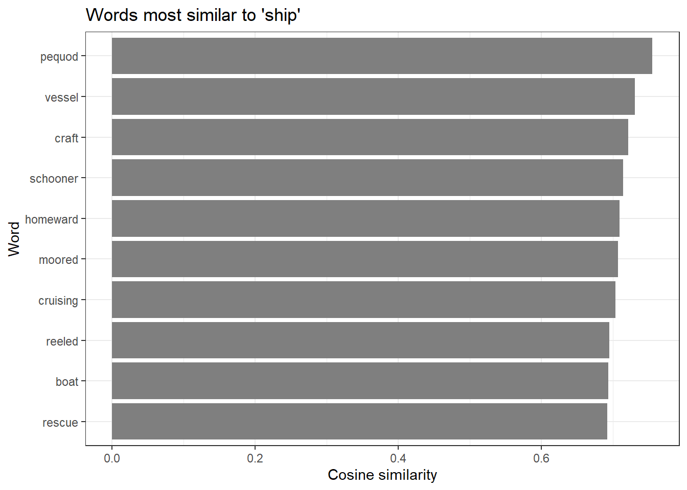
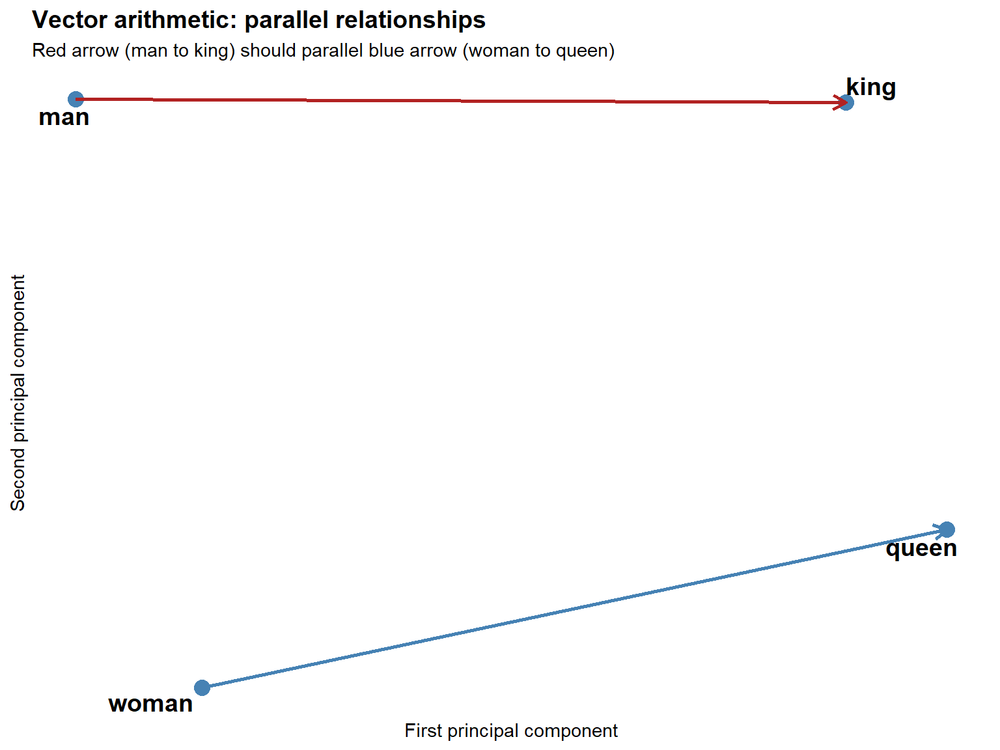
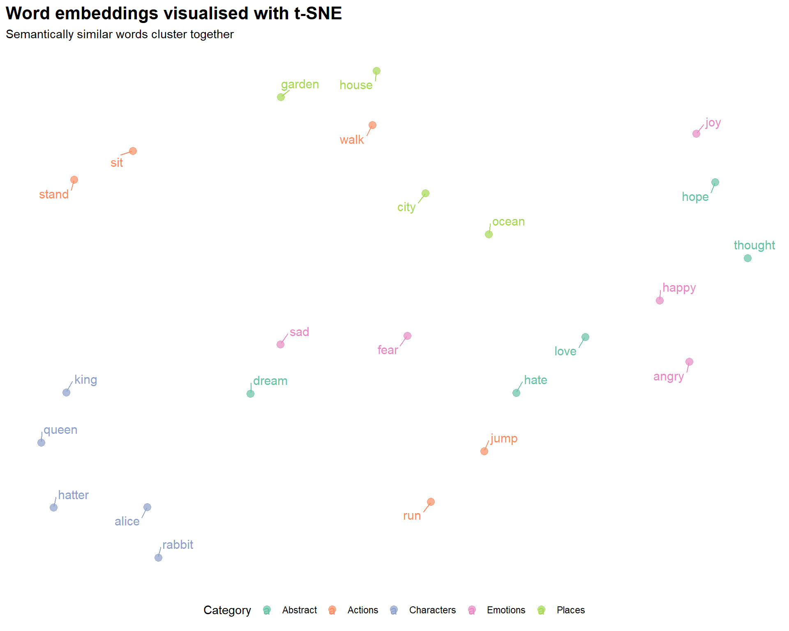

Word Embeddings and Vector Semantics

Introduction

This tutorial introduces word embeddings — dense vector representations of words that capture semantic meaning — and demonstrates how to train, explore, visualise, and apply them in R. Word embeddings are one of the most influential ideas in modern computational linguistics and natural language processing. They underpin everything from search engines and machine translation to sentiment analysis and the large language models that have become central to research workflows.
The tutorial covers the theoretical foundations of vector semantics, the mechanics of the word2vec algorithm, hands-on training of embedding models from raw text, finding semantically similar words, performing word analogies, visualising embedding spaces with t-SNE, using pre-trained embeddings such as GloVe and fastText, and applying embeddings to research questions in linguistics including semantic change, bias detection, and metaphor analysis.
Learning Objectives
By the end of this tutorial you will be able to:
- Explain the distributional hypothesis and its role as the theoretical foundation of word embeddings
- Distinguish between count-based, prediction-based, and contextualised embedding approaches
- Describe how the word2vec skip-gram algorithm learns word vectors from text
- Train a word2vec model in R using the
word2vecpackage - Find semantically similar words using cosine similarity
- Perform word analogies via vector arithmetic and interpret the results
- Visualise high-dimensional embeddings in 2D using t-SNE
- Load and query pre-trained GloVe embeddings
- Apply embeddings to linguistic research questions including semantic change and bias detection
- Choose between training custom embeddings and using pre-trained models for a given task
Prerequisite Tutorials
Before working through this tutorial, you should be comfortable with the content of:
A basic understanding of what vectors and matrices are is helpful, but no advanced linear algebra is required.
Citation
Martin Schweinberger. 2026. Word Embeddings and Vector Semantics. The Language Technology and Data Analysis Laboratory (LADAL), The University of Queensland, Australia. url: https://ladal.edu.au/tutorials/embeddings/embeddings.html (Version 3.1.1). doi: 10.5281/zenodo.19332874.
Part 1: The Theory of Word Embeddings
Section Overview
What you will learn: The distributional hypothesis; why traditional word representations fail; the geometry of semantic space; and the three main families of word embeddings
The distributional hypothesis
The theoretical foundation of word embeddings is a deceptively simple idea known as the distributional hypothesis, articulated most memorably by the British linguist J. R. Firth:
“You shall know a word by the company it keeps” (Firth 1957, 11)
The core claim is that words appearing in similar contexts have similar meanings. Consider three sentences: “The cat sat on the mat,” “The dog sat on the mat,” and “The car drove down the street.” Because cat and dog share context words (sat, mat) while car does not, the distributional hypothesis predicts that cat and dog should be semantically closer to each other than either is to car. Word embeddings operationalise this prediction by assigning each word a position in a multidimensional space such that distributional similarity translates into geometric proximity.
This is a linguistically rich idea with deep roots. The distributional hypothesis connects to structuralist notions of paradigmatic and syntagmatic relations, to corpus-based approaches to lexical meaning, and to usage-based theories that treat meaning as emerging from patterns of use in context (Jurafsky and Martin 2024, ch. 6). The fact that meaning can be approximated from co-occurrence statistics alone — without any hand-crafted semantic knowledge — has proven to be one of the most powerful ideas in computational linguistics.
The problem with traditional representations
Before embeddings became widespread, words were typically represented as one-hot vectors: binary vectors with a 1 in the position corresponding to that word and 0 everywhere else.
cat = [1, 0, 0, 0, 0, ..., 0] (10,000 dimensions)
dog = [0, 1, 0, 0, 0, ..., 0]
car = [0, 0, 1, 0, 0, ..., 0]This representation has several fatal problems for semantic tasks. First, there is no way to measure similarity: cat and dog are as different from each other (cosine similarity = 0) as cat and car. Second, the representations are extremely sparse — almost entirely zeros — which is computationally wasteful. Third, the dimensionality grows with vocabulary size, reaching tens or hundreds of thousands of dimensions for any realistic corpus.
Word embeddings solve all of these problems:
cat = [0.2, -0.4, 0.7, ..., 0.1] (100–300 dimensions)
dog = [0.3, -0.5, 0.8, ..., 0.2] (similar to cat)
car = [-0.1, 0.6, -0.3, ..., 0.4] (different from cat/dog)The representations are dense (most values non-zero), low-dimensional (typically 50–300), and semantically structured: similar words cluster together and the geometric relationships between vectors encode meaningful semantic relationships.
Vector space geometry
In an embedding space, similarity is measured by cosine similarity — the cosine of the angle between two vectors:
\[\text{similarity}(A, B) = \frac{A \cdot B}{\|A\| \times \|B\|}\]
Cosine similarity ranges from –1 (opposite directions) to +1 (identical direction). For word embeddings, values between 0.3 and 0.9 are typical for semantically related words.
One of the most striking properties of well-trained embeddings is that vector arithmetic preserves semantic relationships. The famous example (Mikolov et al. 2013):
\[\text{embedding}(\textit{king}) - \text{embedding}(\textit{man}) + \text{embedding}(\textit{woman}) \approx \text{embedding}(\textit{queen})\]
Geometrically, this says that the direction from man to king (representing something like “royalty” or “leadership relative to gender”) is roughly the same as the direction from woman to queen. This parallelism reflects the genuine regularity of the relationship in the training data.
Types of word embeddings
Three broad approaches to learning word embeddings have been developed (Almeida and Xexéo 2019):
Count-based methods (classical) — build a co-occurrence matrix counting how often each pair of words appears within a context window, then apply dimensionality reduction (typically Singular Value Decomposition) to obtain dense vectors. Examples include Latent Semantic Analysis (LSA) and Hyperspace Analogue to Language (HAL). These methods are transparent and interpretable, but less effective than prediction-based methods for most tasks.
Prediction-based methods (modern) — train a neural network to predict context words from a target word (skip-gram) or a target word from its context words (CBOW). The embedding vectors are the learned weights of this network. Examples include word2vec (Mikolov et al. 2013), GloVe (Pennington, Socher, and Manning 2014), and fastText (Bojanowski et al. 2017). These are the most widely used methods in linguistic research.
Contextualised embeddings (current frontier) — produce different vectors for the same word depending on its context, capturing polysemy and disambiguation. Examples include ELMo, BERT, and GPT. The same word bank gets a different vector in “river bank” than in “savings bank.” These models are state-of-the-art for most NLP tasks but require substantially more computational resources.
This tutorial focuses on word2vec and GloVe, which remain the methods of choice for most linguistic research applications.
The word2vec algorithm
Word2vec (Mikolov et al. 2013) introduced two architectures for learning embeddings:
Skip-gram — given a target word, predict the surrounding context words. The network learns to associate each target word with the types of contexts it appears in.
CBOW (Continuous Bag of Words) — given the surrounding context words, predict the target word. Generally faster to train and works better for frequent words; skip-gram works better for rare words and smaller datasets.
The skip-gram training process works as follows. For the sentence “The quick brown fox jumps,” with target word brown and a window of 2:
Training pairs generated: (brown, the), (brown, quick), (brown, fox), (brown, jumps)
The neural network learns to maximise the probability of predicting these context words from the target word, adjusting the embedding vectors at each step to reduce prediction error. After training on many such pairs across the corpus, words that frequently share contexts end up with similar vectors.
Key hyperparameters are summarised below:
| Parameter | What it controls | Typical values |
|---|---|---|
dim |
Embedding dimensions | 50–300 |
window |
Context window size | 5–10 |
min_count |
Minimum word frequency | 5–10 |
type |
Architecture | "skip-gram" or "cbow" |
iter |
Training iterations | 10–50 |
Hyperparameter trade-offs
More dimensions capture more nuance but risk overfitting and slow training. A larger window captures broader topical relationships; a smaller window captures tighter syntactic relationships. More iterations improve learning but with diminishing returns. A good starting point is dim = 100, window = 5, iter = 20, then experiment based on results.
Exercises: Theory
Q1. The word2vec model is trained on a corpus where the word “awful” appears frequently in contexts alongside words like “terrible,” “dreadful,” and “horrible.” The word “awesome” appears frequently alongside “amazing,” “incredible,” and “brilliant.” Based on the distributional hypothesis, what would you predict about the cosine similarity between the embeddings of “awful” and “awesome”? What does this tell us about the relationship between distributional similarity and semantic similarity?
Part 2: Setup and Data
Section Overview
What you will learn: Which R packages are needed; how to install them; and how to load and preprocess text for embedding training
Installing packages
Code
install.packages("word2vec") # word2vec training
install.packages("text2vec") # alternative, faster for large corpora
install.packages("textdata") # download pre-trained GloVe
install.packages("dplyr")
install.packages("stringr")
install.packages("tidyr")
install.packages("purrr")
install.packages("ggplot2")
install.packages("ggrepel")
install.packages("Rtsne") # t-SNE dimensionality reduction
install.packages("here")
install.packages("flextable")
install.packages("checkdown")Loading packages
Code
library(word2vec)
library(dplyr)
library(stringr)
library(tidyr)
library(purrr)
library(ggplot2)
library(ggrepel)
library(Rtsne)
library(here)
library(flextable)
Package overview
word2vec— trains word2vec models; the easiest entry point for beginnerstext2vec— faster and more memory-efficient for large corporatextdata— provides convenient access to pre-trained GloVe embeddingsRtsne— implements t-SNE for 2D visualisation of high-dimensional embedding spaces
Loading example data
We use three public-domain literary texts — Alice’s Adventures in Wonderland, Moby Dick, and Pride and Prejudice — as our training corpus. These texts provide sufficient vocabulary diversity for demonstration purposes, though for serious research applications you would want a domain-specific corpus of at least 10 million words.
Code
alice <- readLines(here::here("tutorials/embeddings/data", "alice.txt"))
moby <- readLines(here::here("tutorials/embeddings/data", "moby.txt"))
pride <- readLines(here::here("tutorials/embeddings/data", "pride.txt"))
# Combine into a single corpus string
corpus <- paste(c(alice, moby, pride), collapse = " ")
# Preprocessing: lowercase and normalise whitespace
corpus_clean <- corpus |>
tolower() |>
str_replace_all("\\s+", " ") |>
str_trim()
cat("Corpus size:", str_count(corpus_clean, "\\S+"), "words\n")Corpus size: 362385 wordsCode
cat("First 200 characters:\n")First 200 characters:Code
cat(substr(corpus_clean, 1, 200), "...\n")*** start of the project gutenberg ebook 11 *** [illustration] alice’s adventures in wonderland by lewis carroll the millennium fulcrum edition 3.0 contents chapter i. down the rabbit-hole chapter ii. ...
Preprocessing decisions
For this tutorial we apply minimal preprocessing: lowercasing and whitespace normalisation. Your own research may require different choices:
- Keep case if named entities or proper nouns are important to your research questions
- Keep punctuation if syntactic context is relevant (some embeddings benefit from sentence boundary information)
- Remove or tag numbers depending on whether numeric values carry semantic content in your domain
- Handle contractions consistently (e.g., expand don’t to do not, or keep as is)
There is no universal answer — the right preprocessing depends on your research question and corpus.
Part 3: Training a Word2Vec Model
Section Overview
What you will learn: How to format text for word2vec; how to train a model; and how to extract and inspect the embedding matrix
Formatting text for word2vec
word2vec requires a vector of sentences, not a single string
The word2vec() function processes text sentence by sentence. It must receive a character vector where each element is a sentence (or document). A single long string will cause a training error.
Code
# Split corpus into sentences
corpus_sentences <- corpus_clean |>
str_split("\\.\\s+") |>
unlist() |>
discard(~ nchar(.x) == 0)
cat("Number of sentences:", length(corpus_sentences), "\n")Number of sentences: 12980 Code
cat("Example sentence:", corpus_sentences[[5]], "\n")Example sentence: the rabbit sends in a little bill chapter v Training the model
Code
set.seed(42)
model <- word2vec(
x = corpus_sentences,
type = "skip-gram",
dim = 100,
window = 5,
iter = 20,
min_count = 5,
threads = 2
)
# Inspect: show first 50 words in vocabulary
summary(model)[1:50] [1] "abundantly" "acceptance" "accompany" "accounting" "ache"
[6] "adhering" "afar" "aged" "alacrity" "alien"
[11] "altar" "amazed" "amber" "amends" "anatomical"
[16] "anchored" "andes" "animation" "answers" "antarctic"
[21] "antique" "apologize" "apple" "apply" "arrested"
[26] "arrow" "artificial" "ascribed" "assertion" "associations"
[31] "assuming" "atmosphere" "attacked" "attempts" "attractions"
[36] "attribute" "attributed" "augment" "authorities" "axe"
[41] "bade" "banished" "barb" "barely" "bats"
[46] "beard" "befell" "behalf" "bingleys" "bitterly" What happened during training:
- The text was tokenised into words
- Random initial vectors were assigned to all vocabulary words
- For each target word, the model predicted context words within a window of 5
- Prediction errors were used to update the embedding vectors
- This process was repeated 20 times (iterations) across the entire corpus
- Words that frequently shared contexts ended up with similar vectors
Extracting the embedding matrix
Code
embedding_matrix <- as.matrix(model)
cat("Embedding matrix:", nrow(embedding_matrix), "words x",
ncol(embedding_matrix), "dimensions\n")Embedding matrix: 5876 words x 100 dimensionsCode
# Look at a specific word's embedding
word_example <- "alice"
if (word_example %in% rownames(embedding_matrix)) {
cat("\nFirst 10 dimensions of embedding for '", word_example, "':\n", sep = "")
cat(round(embedding_matrix[word_example, 1:10], 4), "...\n")
}
First 10 dimensions of embedding for 'alice':
0.1074 0.9485 -0.5556 -1.3119 0.8869 -0.3789 -0.3702 1.8697 0.0456 0.2259 ...Each row of the embedding matrix represents one word as a 100-dimensional vector. The individual dimension values have no direct linguistic interpretation — what matters is the pattern of values across dimensions, and specifically how similar two patterns are to each other.
Part 4: Semantic Similarity
Section Overview
What you will learn: How to find the nearest neighbours of a word in embedding space; how to interpret cosine similarity scores; and how similarity in embedding space relates to (and differs from) lexical semantic similarity
Finding similar words
Code
# Find the 10 words most similar to "queen"
similar_to_queen <- predict(
model,
newdata = "queen",
type = "nearest",
top_n = 10
)
similar_to_queen |>
as.data.frame() |>
flextable() |>
set_table_properties(width = 0.6, layout = "autofit") |>
theme_zebra() |>
set_caption("Top 10 words most similar to 'queen'") |>
border_outer()queen.term1 | queen.term2 | queen.similarity | queen.rank |
|---|---|---|---|
queen | king | 0.7985939 | 1 |
queen | executioner | 0.7385558 | 2 |
queen | hurriedly | 0.7372494 | 3 |
queen | knave | 0.7223672 | 4 |
queen | “here | 0.7145847 | 5 |
queen | shrill | 0.7002829 | 6 |
queen | croquet | 0.6988776 | 7 |
queen | screamed | 0.6988437 | 8 |
queen | duchess | 0.6982710 | 9 |
queen | hatter | 0.6927382 | 10 |
Visualising similarity scores
Code
similar_ship <- predict(model, newdata = "ship", type = "nearest", top_n = 12)
similar_ship |>
as.data.frame() |>
head(10) |>
ggplot(aes(x = reorder(ship.term2, ship.similarity), y = ship.similarity)) +
geom_bar(stat = "identity", fill = "gray50") +
coord_flip() +
labs(
title = "Words most similar to 'ship'",
x = "Word",
y = "Cosine similarity"
) +
theme_bw()
Exploring multiple words
Code
test_words <- c("love", "king", "ocean", "thought")
for (word in test_words) {
if (word %in% rownames(embedding_matrix)) {
similar <- predict(model, newdata = word, type = "nearest", top_n = 5)
cat("\nMost similar to '", word, "':\n", sep = "")
print(as.data.frame(similar)[, 2])
}
}
Most similar to 'love':
[1] "entertain" "colonel" "preserve" "jealousy" "bitterness"
Most similar to 'king':
[1] "queen" "“because" "executioner" "knave" "decidedly"
Most similar to 'ocean':
[1] "sunset" "polar" "snuffed" "icy" "tablets"
Most similar to 'thought':
[1] "knew" "confused" "grieved" "glanced" "“though"
Interpreting similarity results
Embedding similarity captures several different types of relationships simultaneously — synonymy, antonymy, topical association, and grammatical similarity can all contribute. Words that are similar in the embedding space share distributional contexts; this often correlates with semantic similarity but is not identical to it.
Notably, antonyms like love and hate may appear relatively similar in embedding space because they occupy parallel syntactic positions in sentences about emotion. This is a known limitation of static word embeddings trained purely on co-occurrence: they encode distributional pattern similarity, which only approximates semantic similarity.
Exercises: Semantic similarity
Q2. A researcher trains a word2vec model on a corpus of 19th-century English novels and finds that the words most similar to “gay” are: cheerful, merry, lively, bright, animated. A colleague trains a model on a corpus of 21st-century web text and finds the most similar words to be: lesbian, bisexual, queer, transgender, pride. What does this difference illustrate, and why is it important for linguistic research using word embeddings?
Part 5: Word Analogies
Section Overview
What you will learn: How vector arithmetic implements word analogies; how to compute analogies manually; the conditions under which analogies work well; and how to visualise the geometric parallelism that makes analogies possible
Vector arithmetic for analogies
One of the most celebrated properties of word embeddings is that vector arithmetic can solve analogy tasks (Mikolov et al. 2013). The analogy “man is to king as woman is to ?” is solved by:
\[\text{target} = \text{embedding}(\textit{king}) - \text{embedding}(\textit{man}) + \text{embedding}(\textit{woman})\]
The word whose embedding is closest to this target vector should be queen. Geometrically, the vector from man to king captures the “royalty” direction in embedding space, and applying the same displacement to woman points toward queen.
Code
# Helper function: a is to b as c is to ?
# Mathematically: result = b - a + c
word_analogy <- function(model, a, b, c, top_n = 5) {
embeddings <- as.matrix(model)
if (!all(c(a, b, c) %in% rownames(embeddings))) {
missing <- c(a, b, c)[!c(a, b, c) %in% rownames(embeddings)]
stop(paste("Words not in vocabulary:", paste(missing, collapse = ", ")))
}
vec_a <- embeddings[a, ]
vec_b <- embeddings[b, ]
vec_c <- embeddings[c, ]
# Compute the target vector
target_vector <- vec_b - vec_a + vec_c
# Cosine similarity with all vocabulary words
similarities <- apply(embeddings, 1, function(wv) {
sum(wv * target_vector) /
(sqrt(sum(wv^2)) * sqrt(sum(target_vector^2)))
})
# Remove the input words from results
similarities <- similarities[!names(similarities) %in% c(a, b, c)]
top_words <- sort(similarities, decreasing = TRUE)[1:top_n]
data.frame(
word = names(top_words),
similarity = as.numeric(top_words),
row.names = NULL
)
}Code
# Classic analogy: man is to king as woman is to ?
analogy_result <- word_analogy(model, a = "man", b = "king", c = "woman", top_n = 5)
analogy_result |>
flextable() |>
set_table_properties(width = 0.5, layout = "autofit") |>
theme_zebra() |>
set_caption("king - man + woman = ?") |>
border_outer()word | similarity |
|---|---|
queen | 0.5263572 |
“because | 0.4566628 |
complacency | 0.4542734 |
james’s | 0.4449450 |
counting | 0.4356137 |
More analogy examples
Code
vocab <- rownames(as.matrix(model))
test_analogy <- function(model, a, b, c) {
vocab <- rownames(as.matrix(model))
label <- paste(a, ":", b, "::", c, ": ?")
if (!all(c(a, b, c) %in% vocab)) {
missing <- c(a, b, c)[!c(a, b, c) %in% vocab]
cat(label, "\n Words not in vocabulary:", paste(missing, collapse = ", "), "\n\n")
return(invisible(NULL))
}
result <- word_analogy(model, a, b, c, top_n = 5)
cat(label, "\n")
cat(" Top results:", paste(result$word[1:5], collapse = ", "), "\n")
cat(" Similarities:", paste(round(result$similarity[1:5], 3), collapse = ", "), "\n\n")
return(invisible(result))
}
test_analogy(model, "queen", "woman", "man")queen : woman :: man : ?
Top results: young, education, healthy, everyone, person
Similarities: 0.483, 0.467, 0.45, 0.448, 0.442 Code
test_analogy(model, "alice", "girl", "boy")alice : girl :: boy : ?
Top results: spoiled, dough, respectable, lad, lies
Similarities: 0.489, 0.46, 0.434, 0.426, 0.421 Code
if (all(c("walking", "walk", "running") %in% vocab)) {
test_analogy(model, "walk", "walking", "running")
}walk : walking :: running : ?
Top results: flinging, pulled, jumping, whereupon, tub
Similarities: 0.473, 0.461, 0.418, 0.408, 0.406
Why analogies sometimes fail
Analogy results depend heavily on the size and diversity of the training corpus. Our literary corpus of approximately 500,000 words is far smaller than what is needed for robust analogy performance — serious analogy benchmarking requires 100 million words or more (Mikolov et al. 2013). Analogies work best when the relationship is represented consistently across many examples in the training data. The gender analogy (man/king/woman/queen) works well on large corpora because grammatical gender is pervasive; idiomatic or culture-specific relationships work much less reliably.
Visualising vector arithmetic
Code
vocab <- rownames(as.matrix(model))
if (all(c("man", "woman", "king", "queen") %in% vocab)) {
embeddings <- as.matrix(model)
words_of_interest <- c("man", "woman", "king", "queen")
word_embeddings <- embeddings[words_of_interest, ]
pca_result <- prcomp(word_embeddings, center = TRUE, scale. = FALSE)
viz_data <- data.frame(
word = words_of_interest,
x = pca_result$x[, 1],
y = pca_result$x[, 2]
)
ggplot(viz_data, aes(x = x, y = y, label = word)) +
geom_point(size = 4, color = "steelblue") +
geom_text_repel(size = 5, fontface = "bold") +
geom_segment(
data = viz_data[viz_data$word %in% c("man", "king"), ],
aes(x = x[1], y = y[1], xend = x[2], yend = y[2]),
arrow = arrow(length = unit(0.3, "cm")),
color = "firebrick", linewidth = 1
) +
geom_segment(
data = viz_data[viz_data$word %in% c("woman", "queen"), ],
aes(x = x[1], y = y[1], xend = x[2], yend = y[2]),
arrow = arrow(length = unit(0.3, "cm")),
color = "steelblue", linewidth = 1
) +
theme_minimal() +
labs(
title = "Vector arithmetic: parallel relationships",
subtitle = "Red arrow (man to king) should parallel blue arrow (woman to queen)",
x = "First principal component",
y = "Second principal component"
) +
theme(
plot.title = element_text(size = 14, face = "bold"),
axis.text = element_blank(),
panel.grid = element_blank()
)
} else {
cat("Words man, woman, king, queen not all in vocabulary — skipping visualisation.\n")
}
The two arrows should be roughly parallel and equal in length. This geometric parallelism is what makes vector-arithmetic analogies work: the transformation that turns man into king (in the embedding space) is approximately the same as the transformation that turns woman into queen.
Exercises: Word analogies
Q3. A researcher applies the analogy walking : walk :: running : ? to a word2vec model trained on a small corpus of 500,000 words and gets poor results (the top result is an unrelated word). She concludes that word2vec cannot capture morphological relationships. Is this conclusion justified? What are the actual reasons the analogy might fail, and what should she do instead?
Part 6: Visualising Embeddings
Section Overview
What you will learn: Why embeddings need dimensionality reduction for visualisation; how t-SNE works conceptually; how to run t-SNE in R; and how to interpret the resulting plot
The dimensionality challenge
Embedding spaces have 50–300 dimensions. Human perception is limited to 2–3 dimensions. To visualise where words sit relative to each other, we need to project the high-dimensional space down to 2D while preserving the local neighbourhood structure as faithfully as possible.
t-SNE (t-Distributed Stochastic Neighbor Embedding) is the most popular method for this purpose. It works by modelling the probability that two points are neighbours in the high-dimensional space, then finding a 2D configuration that matches those probabilities as closely as possible. Words that are close in 100D should be close in 2D; words that are far apart should remain far apart (approximately).
Preparing the data
Code
words_to_plot <- c(
# Characters
"alice", "queen", "king", "hatter", "rabbit",
# Emotions
"happy", "sad", "angry", "joy", "fear",
# Actions
"walk", "run", "jump", "sit", "stand",
# Places
"house", "garden", "forest", "city", "ocean",
# Abstract
"love", "hate", "hope", "dream", "thought"
)
# Keep only words in our vocabulary
words_to_plot <- words_to_plot[words_to_plot %in% rownames(embedding_matrix)]
plot_embeddings <- embedding_matrix[words_to_plot, ]
cat("Words available for t-SNE plot:", length(words_to_plot), "\n")Words available for t-SNE plot: 24 Running t-SNE
Code
set.seed(42)
tsne_result <- Rtsne(
plot_embeddings,
dims = 2,
perplexity = min(10, (nrow(plot_embeddings) - 1) / 3),
theta = 0.0,
max_iter = 1000
)
tsne_data <- data.frame(
word = words_to_plot,
x = tsne_result$Y[, 1],
y = tsne_result$Y[, 2],
category = case_when(
words_to_plot %in% c("alice", "queen", "king", "hatter", "rabbit") ~ "Characters",
words_to_plot %in% c("happy", "sad", "angry", "joy", "fear") ~ "Emotions",
words_to_plot %in% c("walk", "run", "jump", "sit", "stand") ~ "Actions",
words_to_plot %in% c("house", "garden", "forest", "city", "ocean") ~ "Places",
TRUE ~ "Abstract"
)
)Plotting the embedding space
Code
ggplot(tsne_data, aes(x = x, y = y, color = category, label = word)) +
geom_point(size = 3, alpha = 0.7) +
geom_text_repel(size = 4, max.overlaps = 20, box.padding = 0.5) +
scale_color_brewer(palette = "Set2") +
theme_minimal() +
theme(
legend.position = "bottom",
plot.title = element_text(size = 16, face = "bold"),
axis.text = element_blank(),
axis.ticks = element_blank(),
panel.grid = element_blank()
) +
labs(
title = "Word embeddings visualised with t-SNE",
subtitle = "Semantically similar words cluster together",
x = NULL,
y = NULL,
color = "Category"
)
Reading the plot:
- Proximity indicates semantic similarity — words that are close together in the plot have similar embedding vectors, meaning they tend to appear in similar contexts
- Clusters reflect shared distributional patterns — words from the same semantic category often cluster together
- Absolute position is arbitrary — the specific coordinates have no meaning; only relative distances matter
- t-SNE preserves local structure — words that are neighbours in the high-dimensional space will be neighbours in 2D, but distances between distant clusters are not reliably preserved
t-SNE parameter notes
The perplexity parameter (roughly: how many neighbours to consider) has a large effect on the visual appearance. Too low a value overemphasises local structure; too high a value loses it. A value of 5–50 is typically appropriate, with 30 being the most common default.
The theta parameter controls the speed-accuracy trade-off: 0.0 gives exact t-SNE (slow but accurate); 0.5 gives the Barnes-Hut approximation (much faster, good enough for large datasets).
Importantly, t-SNE is stochastic — running it twice with different seeds gives different plots. Always set a seed for reproducibility.
Part 7: Pre-Trained Embeddings
Section Overview
What you will learn: When to use pre-trained embeddings rather than training your own; how to download and use GloVe; and how to choose between GloVe, fastText, and BERT for your research question
When to use pre-trained embeddings
Pre-trained embeddings offer several advantages over training your own. They are trained on massive datasets — billions of words — giving much better coverage of rare words and more reliable semantic representations. They require no training time. And they have been validated on standard benchmarks and used in published research, making results easier to contextualise and compare.
You should train your own embeddings when:
- Your corpus is in a specialised domain with vocabulary not well represented in general corpora (e.g. historical texts, clinical notes, legal documents, a specific language or dialect)
- Your research question concerns the distributional patterns in a particular corpus (e.g. comparing across time periods or registers)
- Pre-trained embeddings for your language are not available
GloVe embeddings
GloVe (Global Vectors for Word Representation) (Pennington, Socher, and Manning 2014) is trained on aggregated global word-word co-occurrence statistics from a large corpus. Unlike word2vec, which uses a local context window, GloVe explicitly factorises the word-word co-occurrence matrix, combining the advantages of global matrix factorisation and local window-based methods. GloVe embeddings trained on Wikipedia and Gigaword (6 billion tokens, 400K vocabulary) are widely used as a general-purpose baseline.
Code
library(textdata)
# Download 100-dimensional GloVe vectors (one-time, ~800 MB)
glove <- embedding_glove6b(dimensions = 100)Code
# Rename columns for clarity
colnames(glove)[1] <- "word"
colnames(glove)[2:ncol(glove)] <- paste0("dim_", 1:100)
# Convert to matrix
glove_matrix <- as.matrix(glove[, -1])
rownames(glove_matrix) <- glove$word
# Find similar words
target_word <- "linguistics"
target_vector <- glove_matrix[target_word, ]
similarities <- apply(glove_matrix, 1, function(x) {
sum(x * target_vector) /
(sqrt(sum(x^2)) * sqrt(sum(target_vector^2)))
})
head(sort(similarities, decreasing = TRUE), 10)For comprehensive background on neural network approaches to NLP, including the theory behind word embeddings, see Goldberg (2017). For an accessible introduction to transformer models and contextualised embeddings, see Tunstall, von Werra, and Wolf (2022).
Choosing between pre-trained models
| Model | Trained on | Vocabulary | Dimensions | Best for |
|---|---|---|---|---|
| GloVe | Wikipedia + Gigaword (6B tokens) | 400K | 50–300 | General English, linguistics research |
| fastText | Common Crawl (600B tokens) | 2M+ | 300 | Morphologically rich languages, rare words, misspellings |
| word2vec (Google News) | Google News (100B tokens) | 3M | 300 | News domain |
| BERT | Wikipedia + BookCorpus | Contextual | 768 | Context-dependent tasks, polysemy |
Choosing a model
GloVe is usually the best starting point for general linguistic research: it is simple to use, well-documented, and widely cited.
fastText (Bojanowski et al. 2017) handles out-of-vocabulary words by representing them as the sum of their character n-gram vectors. This makes it superior for morphologically complex languages (German, Finnish, Turkish), historical texts with spelling variation, and social media text with neologisms and misspellings.
BERT and other transformer models produce contextualised embeddings — the same word gets a different vector depending on its context. This is essential for tasks involving polysemy (word sense disambiguation), but adds substantial complexity and computational cost. See the LADAL Text Classification with BERT tutorial for an introduction.
Code
# fastText (requires fastrtext package)
library(fastrtext)
model_ft <- load_model("path/to/fasttext/model.bin")
# For BERT and other transformers, use the `text` package
library(text)
embeddings_bert <- textEmbed(
texts = c("The bank is near the river", "I need to visit the bank"),
model = "bert-base-uncased"
)
# "bank" gets DIFFERENT vectors in these two sentencesPart 8: Research Applications
Section Overview
What you will learn: How to apply embeddings to three substantive linguistic research questions: diachronic semantic change detection, gender bias measurement, and metaphor analysis
Semantic change detection
Tracking how word meanings shift over time is one of the most compelling applications of word embeddings in linguistics. By training separate models on corpora from different historical periods and comparing the nearest neighbours of a target word, researchers can document, date, and quantify semantic change (Hamilton, Leskovec, and Jurafsky 2016).
Hamilton, Leskovec & Jurafsky proposed two statistical laws of semantic change: the law of conformity (high-frequency words change more slowly) and the law of innovation (words with more senses change faster). Both laws were discovered by analysing diachronic embeddings at scale across multiple languages and centuries.
Code
# Conceptual example — requires historical corpora
corpus_1800s <- load_corpus("1800-1850")
corpus_2000s <- load_corpus("2000-2020")
model_1800s <- word2vec(corpus_1800s, dim = 100, iter = 20)
model_2000s <- word2vec(corpus_2000s, dim = 100, iter = 20)
target_word <- "gay"
# Neighbours in 1800s: cheerful, merry, lively, bright, festive
neighbors_1800s <- predict(model_1800s, target_word, type = "nearest", top_n = 10)
# Neighbours in 2000s: lesbian, queer, bisexual, pride, homosexual
neighbors_2000s <- predict(model_2000s, target_word, type = "nearest", top_n = 10)
# The shift in neighbourhood tells us when and how the meaning changedBias detection
Embeddings trained on large text corpora absorb the statistical regularities of human language use — including its biases. Research has shown that standard English word embeddings associate occupational terms with genders in ways that mirror historical stereotypes: doctor and engineer are closer to the male pole of the gender axis; nurse and secretary are closer to the female pole (Bolukbasi et al. 2016; Caliskan, Bryson, and Narayanan 2017; Garg et al. 2018).
Code
# Define a gender direction vector
man_vec <- embedding_matrix["man", ]
woman_vec <- embedding_matrix["woman", ]
gender_direction <- woman_vec - man_vec
# Measure gender association of occupational terms
occupations <- c("doctor", "nurse", "engineer", "teacher", "programmer", "secretary")
occupation_bias <- sapply(occupations, function(occ) {
if (occ %in% rownames(embedding_matrix)) {
occ_vec <- embedding_matrix[occ, ]
# Project onto gender direction
sum(occ_vec * gender_direction) /
(sqrt(sum(occ_vec^2)) * sqrt(sum(gender_direction^2)))
} else NA
})
# Positive values = more female-associated; negative = more male-associated
sort(occupation_bias)
Ethical considerations when using embeddings
Embeddings encode and reproduce the biases present in their training data. This has practical consequences: systems that use embeddings for hiring, lending, or content recommendation can perpetuate and amplify historical inequalities even without explicit discriminatory intent.
For researchers, the key obligations are:
- Acknowledge the limitations and potential biases of any embedding model used
- Do not treat embedding-based associations as objective truths about the world — they reflect patterns in text, which reflect patterns of human behaviour and historical inequalities
- When using embeddings in applied contexts, consider debiasing techniques (Bolukbasi et al. 2016), though note that these techniques are themselves imperfect and contested
- Use diverse, balanced training corpora where possible
Metaphor analysis
Word embeddings can quantify cross-domain semantic associations that underlie conceptual metaphors. The conceptual metaphor IDEAS ARE LIGHT predicts that words from the light/illumination domain should be semantically similar to words from the knowledge/understanding domain. We can test this by computing the similarity matrix between source and target domain words (Jurafsky and Martin 2024).
Code
source_domain <- c("light", "bright", "illuminate", "shine", "glow")
target_domain <- c("idea", "thought", "insight", "knowledge", "understanding")
metaphor_matrix <- matrix(
0,
nrow = length(source_domain),
ncol = length(target_domain),
dimnames = list(source_domain, target_domain)
)
for (s in source_domain) {
for (t in target_domain) {
if (s %in% rownames(embedding_matrix) && t %in% rownames(embedding_matrix)) {
sv <- embedding_matrix[s, ]
tv <- embedding_matrix[t, ]
metaphor_matrix[s, t] <- sum(sv * tv) /
(sqrt(sum(sv^2)) * sqrt(sum(tv^2)))
}
}
}
# Visualise as a heatmap
library(pheatmap)
pheatmap(metaphor_matrix,
main = "IDEAS ARE LIGHT metaphor: cross-domain similarities",
display_numbers = TRUE,
number_format = "%.2f")Part 9: Advanced Topics and Practical Workflow
Section Overview
What you will learn: Tips for getting better embeddings; common training errors and their fixes; how to evaluate embedding quality; an overview of document and sentence embeddings; and a practical decision framework for real research projects
Getting better embeddings
Data quality and quantity are the most important factors. For word2vec, aim for at least 10 million words; 100 million is better. Clean your data carefully:
corpus_clean <- raw_text |>
iconv(to = "UTF-8", sub = "") |> # Fix encoding
tolower() |>
str_replace_all("http\\S+", " ") |> # Remove URLs
str_replace_all("\\d+", " ") |> # Handle numbers
str_replace_all("[^[:alnum:][:space:]]", " ") |> # Remove punctuation
str_replace_all("\\s+", " ") |>
str_trim()Common problems and solutions
“Training failed: fileMapper” error
The most common word2vec error. Cause: the text was passed as a single long string rather than a character vector of sentences. Fix: split into sentences first.
# Wrong
model <- word2vec(paste(texts, collapse = " "))
# Correct
sentences <- texts |> paste(collapse = " ") |> str_split("\\.\\s+") |> unlist()
model <- word2vec(sentences)Poor quality results — increase corpus size; check preprocessing did not remove too much content; try more iterations; experiment with CBOW vs skip-gram.
Out-of-vocabulary words — lower min_count; use fastText (handles subwords); use a pre-trained model with larger vocabulary.
Slow training — reduce dimensions; use smaller window size; increase number of threads; consider text2vec package which is faster for large corpora.
Evaluating embeddings
Intrinsic evaluation measures how well embeddings capture human semantic judgements:
# Word similarity datasets: WordSim-353, SimLex-999
evaluate_similarity <- function(model, test_pairs) {
model_scores <- sapply(1:nrow(test_pairs), function(i) {
predict(model,
newdata = c(test_pairs$word1[i], test_pairs$word2[i]),
type = "similarity")
})
cor(model_scores, test_pairs$human_score, method = "spearman")
}Extrinsic evaluation measures performance on a downstream task (text classification, NER, sentiment analysis). This is generally more informative for applied research because it directly measures whether the embeddings are useful for your specific application.
Document embeddings
For document-level tasks (document similarity, clustering, classification), averaging word vectors is a simple and often effective approach. More principled alternatives include doc2vec (paragraph vectors) and sentence transformers.
# Simple document embedding: average of word vectors
doc_to_vector <- function(text, embedding_matrix) {
words <- tolower(unlist(strsplit(text, "\\s+")))
words <- words[words %in% rownames(embedding_matrix)]
if (length(words) == 0) return(NULL)
colMeans(embedding_matrix[words, , drop = FALSE])
}
# For higher-quality sentence embeddings, use the `text` package with BERT
library(text)
sentence_embeddings <- textEmbed(
texts = your_sentences,
model = "sentence-transformers/all-MiniLM-L6-v2"
)Decision framework
Do you have a domain-specific corpus that differs substantially from general English?
Yes: Should you train your own model?
Large corpus (10M+ words) → Train custom embeddings
Small corpus → Use pre-trained embeddings + fine-tuning if needed
No: Use pre-trained embeddings
General English tasks → GloVe (simple, well-validated)
Morphologically rich / rare words → fastText
Context-dependent meaning → BERT / sentence transformers
Is your research question diachronic (meaning change over time)?
→ Train separate models on period-specific corpora
→ Use alignment methods (Procrustes) to make spaces comparable
Is your research question about bias or social meaning?
→ Pre-trained models on large general corpora (GloVe, word2vec Google News)
→ These are better snapshots of general language use than small custom corporaReproducibility checklist
# Document everything so results can be reproduced
analysis_metadata <- list(
date = Sys.Date(),
corpus = "alice.txt + moby.txt + pride.txt",
corpus_words = str_count(corpus_clean, "\\S+"),
preprocessing = list(lowercase = TRUE, remove_punct = FALSE, min_count = 5),
model_params = list(type = "skip-gram", dim = 100, window = 5, iter = 20),
random_seed = 42,
r_version = paste(R.version$major, R.version$minor, sep = ".")
)
saveRDS(analysis_metadata, "model_metadata.rds")
set.seed(42) # Always set before training
Exercises: Advanced topics
Q4. A researcher wants to compare word meanings across three registers: academic writing, newspaper text, and Twitter posts. She plans to train a single word2vec model on a combined corpus of all three. A colleague suggests training three separate models instead. Which approach is better, and why?
Quick Reference
Essential functions
Code
# Training
model <- word2vec(x = sentence_vector, type = "skip-gram",
dim = 100, window = 5, iter = 20, min_count = 5)
# Finding similar words
similar <- predict(model, "king", type = "nearest", top_n = 10)
# Get embedding matrix
embeddings <- as.matrix(model)
# Cosine similarity between two words
cosine_sim <- function(a, b, mat) {
sum(mat[a,] * mat[b,]) / (sqrt(sum(mat[a,]^2)) * sqrt(sum(mat[b,]^2)))
}
# Save and load model
write.word2vec(model, "model.bin")
model <- read.word2vec("model.bin")
# t-SNE visualisation
tsne_result <- Rtsne(word_subset_matrix, dims = 2, perplexity = 30,
theta = 0.5, max_iter = 1000, set.seed(42))Common workflows
# Basic similarity analysis
text |> preprocess() |>
word2vec(dim = 100) -> model
predict(model, "target_word", type = "nearest", top_n = 10)
# Visualisation pipeline
embeddings <- as.matrix(model)
words_subset <- embeddings[selected_words, ]
set.seed(42)
tsne_result <- Rtsne(words_subset, dims = 2, perplexity = 10)
plot_data <- data.frame(word = selected_words,
x = tsne_result$Y[,1], y = tsne_result$Y[,2])
# Word analogy
analogy_vector <- embeddings["king",] - embeddings["man",] + embeddings["woman",]
# Find nearest neighbour to analogy_vector in embedding spaceFinal Project Ideas
Capstone projects
Apply what you have learned with these research projects:
1. Historical semantic change Collect texts from different decades (e.g. from Project Gutenberg for historical periods; from newspaper archives for recent decades). Train separate embedding models. Track the nearest neighbours of target words over time. Visualise changes and identify the approximate date of semantic shifts.
2. Domain-specific terminology extraction Gather a specialised corpus (medical, legal, technical, or a specific academic field). Train custom embeddings. Use the nearest neighbours of known domain terms as seeds to extract further domain-specific vocabulary. Compare to a general English model.
3. Register comparison Compare embeddings trained on different registers (formal vs. informal, spoken vs. written, academic vs. popular). Use Procrustes alignment to make the models comparable. Identify words whose meanings are most register-specific.
4. Bias audit Load pre-trained GloVe or word2vec embeddings. Define a gender or ethnicity direction vector. Project occupational terms onto this direction. Quantify associations and compare to historical data on occupational demographics. Replicate or extend the methodology of Garg et al. (2018).
5. Metaphor mapping Identify a conceptual metaphor (e.g. ARGUMENT IS WAR, TIME IS MONEY, LIFE IS A JOURNEY). Define source and target domain vocabulary. Compute the cross-domain similarity matrix using your embeddings. Compare across languages or registers.
Suggested deliverables: A documented R script, at least two visualisations, and a brief report (1000–1500 words) interpreting and discussing your findings.
Citation & Session Info
Citation
Martin Schweinberger. 2026. Word Embeddings and Vector Semantics. The Language Technology and Data Analysis Laboratory (LADAL), The University of Queensland, Australia. url: https://ladal.edu.au/tutorials/embeddings/embeddings.html (Version 3.1.1). doi: 10.5281/zenodo.19332874.
@manual{martinschweinberger2026word,
author = {Martin Schweinberger},
title = {Word Embeddings and Vector Semantics},
year = {2026},
note = {https://ladal.edu.au/tutorials/embeddings/embeddings.html},
organization = {The Language Technology and Data Analysis Laboratory (LADAL), The University of Queensland, Australia},
edition = {3.1.1},
doi = {10.5281/zenodo.19332874}
}Code
sessionInfo()R version 4.4.2 (2024-10-31 ucrt)
Platform: x86_64-w64-mingw32/x64
Running under: Windows 11 x64 (build 26200)
Matrix products: default
locale:
[1] LC_COLLATE=English_United States.utf8
[2] LC_CTYPE=English_United States.utf8
[3] LC_MONETARY=English_United States.utf8
[4] LC_NUMERIC=C
[5] LC_TIME=English_United States.utf8
time zone: Australia/Brisbane
tzcode source: internal
attached base packages:
[1] stats graphics grDevices datasets utils methods base
other attached packages:
[1] checkdown_0.0.13 flextable_0.9.11 here_1.0.2 Rtsne_0.17
[5] ggrepel_0.9.8 ggplot2_4.0.2 purrr_1.2.1 tidyr_1.3.2
[9] stringr_1.6.0 dplyr_1.2.0 text2vec_0.6.4 word2vec_0.4.1
loaded via a namespace (and not attached):
[1] gtable_0.3.6 xfun_0.56 htmlwidgets_1.6.4
[4] lattice_0.22-6 vctrs_0.7.2 tools_4.4.2
[7] generics_0.1.4 tibble_3.3.1 pkgconfig_2.0.3
[10] Matrix_1.7-2 data.table_1.17.0 RColorBrewer_1.1-3
[13] S7_0.2.1 uuid_1.2-1 lifecycle_1.0.5
[16] compiler_4.4.2 farver_2.1.2 textshaping_1.0.0
[19] RhpcBLASctl_0.23-42 codetools_0.2-20 litedown_0.9
[22] fontquiver_0.2.1 fontLiberation_0.1.0 htmltools_0.5.9
[25] yaml_2.3.10 pillar_1.11.1 crayon_1.5.3
[28] openssl_2.3.2 rsparse_0.5.3 fontBitstreamVera_0.1.1
[31] commonmark_2.0.0 tidyselect_1.2.1 zip_2.3.2
[34] digest_0.6.39 stringi_1.8.7 labeling_0.4.3
[37] rprojroot_2.1.1 fastmap_1.2.0 grid_4.4.2
[40] cli_3.6.5 magrittr_2.0.4 patchwork_1.3.0
[43] withr_3.0.2 gdtools_0.5.0 scales_1.4.0
[46] float_0.3-2 rmarkdown_2.30 officer_0.7.3
[49] mlapi_0.1.1 askpass_1.2.1 ragg_1.5.1
[52] evaluate_1.0.5 knitr_1.51 markdown_2.0
[55] rlang_1.1.7 Rcpp_1.1.1 glue_1.8.0
[58] BiocManager_1.30.27 xml2_1.3.6 renv_1.1.7
[61] rstudioapi_0.17.1 jsonlite_2.0.0 lgr_0.4.4
[64] R6_2.6.1 systemfonts_1.3.1
AI Transparency Statement
This tutorial was re-developed with the assistance of Claude (claude.ai), a large language model created by Anthropic. Claude was used to help revise the tutorial text, structure the instructional content, generate the R code examples, and write the checkdown quiz questions and feedback strings. All content was reviewed, edited, and approved by the author (Martin Schweinberger), who takes full responsibility for the accuracy and pedagogical appropriateness of the material. The use of AI assistance is disclosed here in the interest of transparency and in accordance with emerging best practices for AI-assisted academic content creation.
References
Almeida, Felipe, and Geraldo Xexéo. 2019. “Word Embeddings: A Survey.” https://doi.org/10.48550/arXiv.1901.09069.
Bojanowski, Piotr, Edouard Grave, Armand Joulin, and Tomas Mikolov. 2017. “Enriching Word Vectors with Subword Information.” Transactions of the Association for Computational Linguistics 5: 135–46. https://doi.org/10.1162/tacl_a_00051.
Bolukbasi, Tolga, Kai-Wei Chang, James Y. Zou, Venkatesh Saligrama, and Adam Tauman Kalai. 2016. “Man Is to Computer Programmer as Woman Is to Homemaker? Debiasing Word Embeddings.” In Advances in Neural Information Processing Systems 29 (NeurIPS 2016), 4349–57. Barcelona, Spain. https://proceedings.neurips.cc/paper/2016/hash/a486cd07e4ac3d270571622f4f316ec5-Abstract.html.
Caliskan, Aylin, Joanna J. Bryson, and Arvind Narayanan. 2017. “Semantics Derived Automatically from Language Corpora Contain Human-Like Biases.” Science 356 (6334): 183–86. https://doi.org/10.1126/science.aal4230.
Firth, John R. 1957. “A Synopsis of Linguistic Theory, 1930–1955.” In Studies in Linguistic Analysis, 1–32. Oxford: Blackwell.
Garg, Nikhil, Londa Schiebinger, Dan Jurafsky, and James Zou. 2018. “Word Embeddings Quantify 100 Years of Gender and Ethnic Stereotypes.” Proceedings of the National Academy of Sciences 115 (16): E3635–44. https://doi.org/10.1073/pnas.1720347115.
Goldberg, Yoav. 2017. Neural Network Methods for Natural Language Processing. Synthesis Lectures on Human Language Technologies 37. Morgan & Claypool Publishers. https://doi.org/10.2200/S00762ED1V01Y201703HLT037.
Hamilton, William L., Jure Leskovec, and Dan Jurafsky. 2016. “Diachronic Word Embeddings Reveal Statistical Laws of Semantic Change.” In Proceedings of the 54th Annual Meeting of the Association for Computational Linguistics (Volume 1: Long Papers), 1489–1501. Berlin, Germany: Association for Computational Linguistics. https://doi.org/10.18653/v1/P16-1141.
Jurafsky, Daniel, and James H. Martin. 2024. Speech and Language Processing: An Introduction to Natural Language Processing, Computational Linguistics, and Speech Recognition. Third Edition (draft). https://web.stanford.edu/~jurafsky/slp3/.
Mikolov, Tomas, Kai Chen, Greg Corrado, and Jeffrey Dean. 2013. “Efficient Estimation of Word Representations in Vector Space.” In Proceedings of the 1st International Conference on Learning Representations (ICLR 2013), Workshop Track. Scottsdale, AZ. https://doi.org/10.48550/arXiv.1301.3781.
Pennington, Jeffrey, Richard Socher, and Christopher D. Manning. 2014. “GloVe: Global Vectors for Word Representation.” In Proceedings of the 2014 Conference on Empirical Methods in Natural Language Processing (EMNLP), 1532–43. Doha, Qatar: Association for Computational Linguistics. https://doi.org/10.3115/v1/D14-1162.
Tunstall, Lewis, Leandro von Werra, and Thomas Wolf. 2022. Natural Language Processing with Transformers. Revised. Sebastopol, CA: O’Reilly Media.